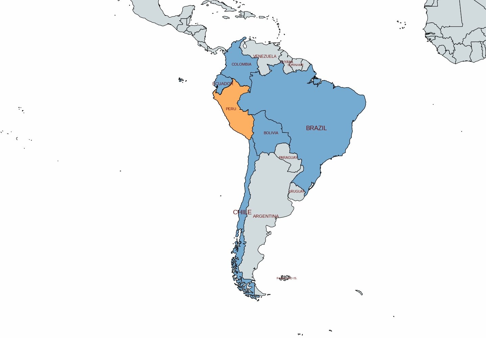
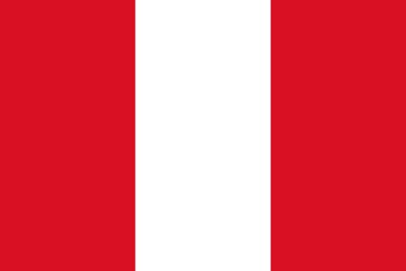
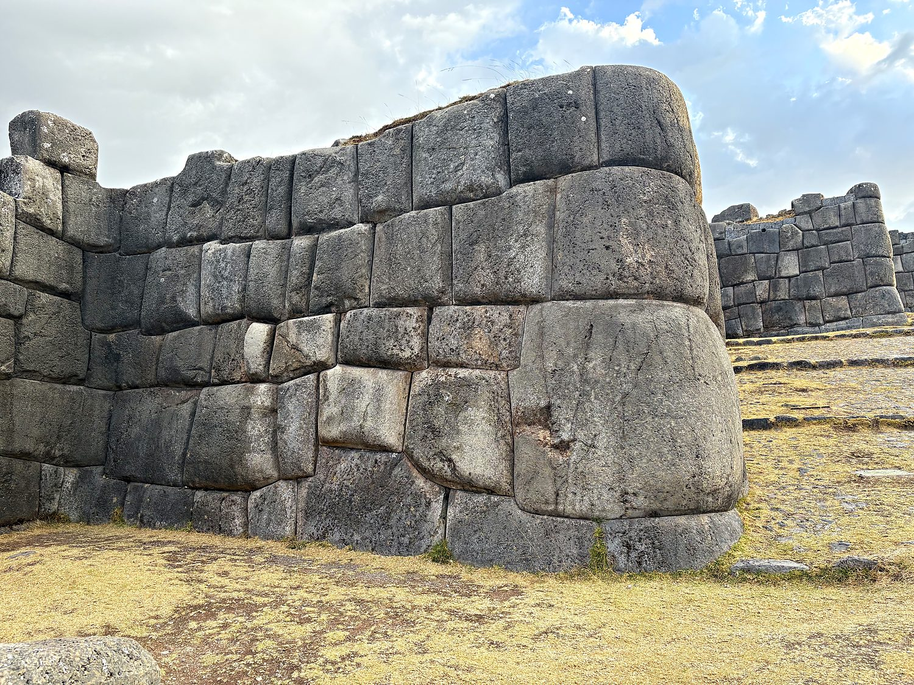
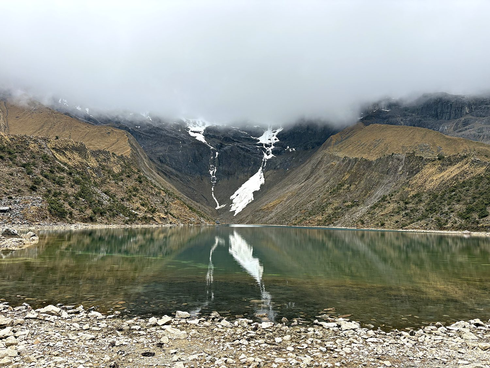
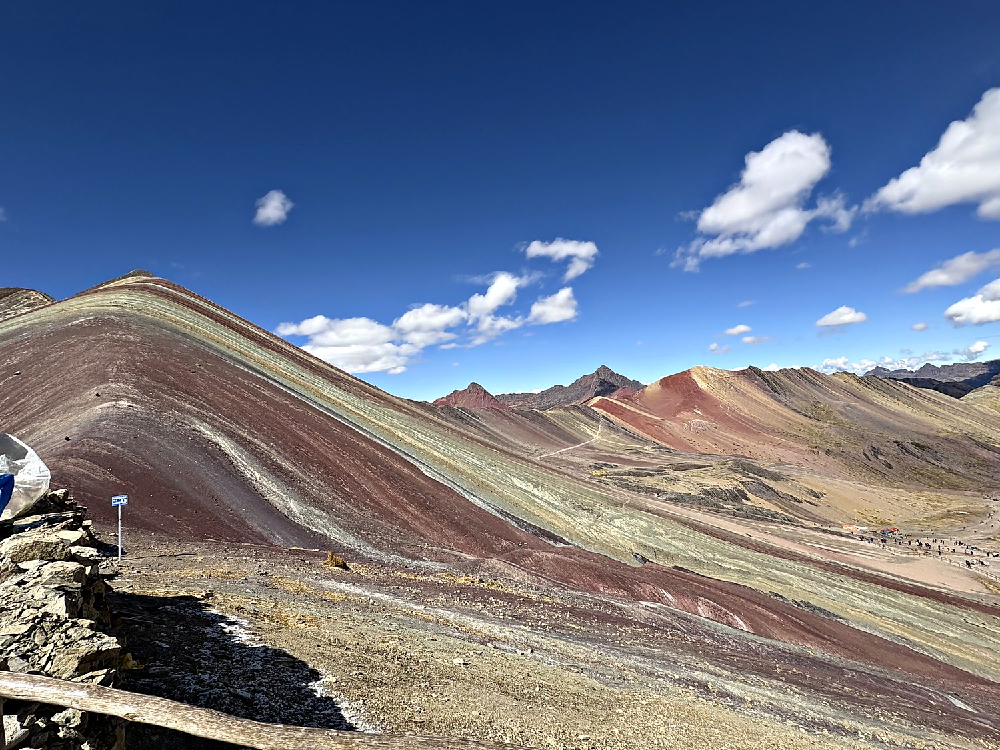

I visited Peru in August 2025 with my friend Allen, with the main goal of course being to see Machu Picchu. Though you can get there by train, adventurous travellers hike a 5-day Inca or Salkantay trails to experience the surrounding nature. Falling in the “ridiculously adventurous, bordering on insanity” category of tourist, I hiked the Salkantay trail in 2 days. The trip involved first climbing to a 15,200-foot pass where the promised panorama of glaciers was replaced by a thick, drizzling mist. I naively believed the numerous people and guides who said that August is Peru’s dry season. The hike then involves descending through a muddy cloud forest, staying at a hotel in small Inca villages along the way, and walking alongside a magnificent river gorge. The variety of the landscapes was wonderful, even despite the fog. Machu Picchu itself is stunning, but the journey there was even more memorable.
My base for all of this was Cusco, the ancient capital of the Inca Empire and, the Incas believed, the very navel of the world. Sitting at over 11,000 feet, it is a gorgeous, dizzying tangle of terracotta rooftops and steep cobbled lanes, where the layers of Peruvian history are stacked quite literally on top of one another. The Spanish, having conquered the city in the 1530s, tore down the Inca temples and built their own baroque churches directly on the original foundations, so that the ornate Cusco Cathedral and the Church of the Society of Jesus now rise from walls of flawless Inca stonework. That masonry is the real marvel: enormous blocks cut and fitted so precisely, without any mortar, that you cannot slip a sheet of paper between them. The most famous is a celebrated twelve-angled stone slotted seamlessly into a downtown wall. I happened to arrive on a Sunday, when the Plaza de Armas filled with a booming military and civic parade, the old Inca capital briefly handed over to brass bands and marching schoolchildren.

The empire that Cusco once ruled was the largest in the history of the Americas. At its height in the fifteenth century, the Inca state was called Tawantinsuyu, “the four regions together”. It stretched some 2,500 miles down the spine of the Andes, binding together perhaps 12 million people with an astonishing network of roads, rope bridges, storehouses, and terraced farms carved into near-vertical mountainsides. What makes it more staggering still is everything the Incas managed without: they had no writing system (keeping records instead on knotted cords called quipu), no wheeled vehicles, no iron tools, and no horses. Yet they engineered stonework and infrastructure that still leaves modern visitors slack-jawed. Machu Picchu itself, built around 1450 as a royal estate, was so remote that the Spanish never found it, which is precisely why it survived so gloriously intact.

That extraordinary empire was toppled with shocking speed. In 1532 the conquistador Francisco Pizarro arrived with fewer than 200 men and, exploiting a civil war raging between two rival Inca brothers and the smallpox already sweeping ahead of him, ambushed and captured the emperor Atahualpa. He extorted a legendary ransom of a room filled once with gold and twice with silver, then executed Atahualpa anyway. Within a few years, a tiny band of Europeans had seized the richest empire in the hemisphere. The Peru that emerged became the crown jewel of Spain's American possessions, growing fat on Andean silver before winning its independence in 1821. Today it is a country of dizzying variety, where Quechua, the language of the Incas, is still spoken by millions, and where the humble potato, first domesticated in these very mountains, remains a point of fierce and entirely justified national pride.
On a hill above Cusco sits Sacsayhuamán, and if the twelve-angled stone downtown is impressive, this is Inca masonry operating on a scale that beggars belief. Its zigzagging ramparts are built from limestone boulders, some weighing well over a hundred tons, hauled into place and fitted together so tightly that the joints look almost liquid. Five centuries on, no one has entirely explained this feat of engineering. It was also the site of a desperate battle in 1536, when the Inca Manco Yupanqui led a massive rebellion and very nearly retook Cusco from the Spanish before being beaten back. It was astonishing to see just how advanced this ancient civilization was, and disturbing to think of how much culture was eradicated by the Spanish conquest.

The first great reward of the Salkantay trek came early, at Humantay Lake, a glacial pool of an unreal milky turquoise cradled beneath the snows of the sacred peak that shares its name. To the Incas and to many Andean people still today, the great mountains are apus, living spirits to be honored and appeased. Standing at that frigid shore beneath their cloud-wrapped summits, I could understand why. Even with the mist rolling in and swallowing the higher glaciers, the lake's glassy stillness and impossible color made it one of the most quietly beautiful places I have ever stood.

My final Andean adventure was Vinicunca, the famous Rainbow Mountain, whose flanks are banded in improbable stripes of red, gold, green, and lavender. This is the result of different mineral deposits laid down over millions of years and then tilted up on end. Curiously, it is one of Peru's newest attractions despite being millions of years old: the mountain spent most of history buried under a cap of snow and ice. It only emerged, fully painted, as that ice retreated over the last decade or so – an accidental and rather bittersweet gift of a warming climate. The main ridge was mobbed with tourists and quad bikes, but a quieter scramble into the neighboring Red Valley delivered exactly what I had come to the Andes for: blazing crimson hills, snow-capped peaks, and, for one glorious stretch, not another soul in sight.
